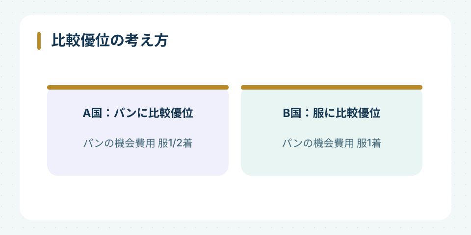

公共 / UNIVERSITY ENTRANCE EXAM
比較優位とは？機会費用で貿易を考える
「何でも上手な国がすべて作ればよい」とは限りません。比較優位は、ほかの生産をどれだけ諦めるかという機会費用の小ささから考えます。
公
このページで学べること
絶対優位との違いを数値例で解説。要点を読んだら、最後の確認問題で理解度をチェックしましょう。
POINT 01
絶対優位と比較優位は違う

絶対優位は少ない労働などで多く作れること。比較優位は機会費用が相対的に小さいことです。生産性で一方が両方に勝っていても、比較優位は通常それぞれに存在します。
POINT 02
数値例で機会費用を計算
1時間でA国はパン4個または服2着、B国はパン2個または服2着を作れるとします。
| 国 | パン／時間 | 服／時間 | パン1個の機会費用 |
|---|---|---|---|
| A国 | 4 | 2 | 服1/2着 |
| B国 | 2 | 2 | 服1着 |
A国はパンの機会費用が低く、B国は服の機会費用が低い（Aは服1着でパン2個、Bは服1着でパン1個）。したがってAはパン、Bは服に比較優位があります。
POINT 03
貿易の利益と現実の条件
それぞれが比較優位のある財に特化し、適切な交易条件で交換すれば、両方が利益を得る可能性があります。ただし、輸送費、技術移転、雇用への影響、貿易政策など、現実には追加の条件が重要です。
比較優位の計算では「どちらが多く作れるか」だけでなく、諦めた別の財を数える。
PRACTICE
確認問題に挑戦！
全3問。答えを考えてから「解答と解説を見る」を押してね。
Q01
比較優位の判断基準は？
解答と解説を見る ＋
正解・解答例
機会費用の小ささ
代わりに諦める財の量を比較します。
Q02
A国がパン4・服2、B国がパン2・服2を1時間で作る場合、パンに比較優位があるのは？
解答と解説を見る ＋
正解・解答例
A国
パン1個の機会費用はAが服1/2、Bが服1。
Q03
絶対優位と比較優位は必ず一致する？
解答と解説を見る ＋
正解・解答例
一致しない
生産性が両方高い国でも比較優位は品目によって異なります。
今日のまとめ
比較優位は生産量そのものではなく機会費用で判断する。
ここまで読めたら、ひと区切り。
理解できたら学習済みにチェックして、次の記事へ。
記事について
StudyMasterの無料学習コンテンツです。AIを補助的に用いて作成しています。例題・解答は公開前にご自身でも確認してください。内容に誤りがある場合は、学校の教科書などと照合してください。
公開・更新：2026年11月12日